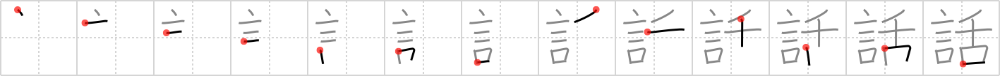

話
← →
tale

Reading:
On-Yomi: ワ — Kun-Yomi: はな.す、はなし
Heisig story:
That the words of the tongue should come to mean a tale is clear from the etymology: a tale is something "talked," not something read from a book.
Koohii stories:
1) [dicedice] 22-7-2007(178): Tales are always spoken, not written, and because of this, words fly out of your tongue, rather than your pen.
2) [Rivvie] 28-1-2008(55): Tales are spoken words, passed on from person to person, eventually being spoken by a thousand mouths.
3) [raseru] 17-2-2008(29): Tales are words from the tongue.
4) [liosama] 5-7-2008(21): Tales are Told from Tongues (TTT mnemonic).
5) [BigAmish] 2-8-2008(9): Beowulf is an epic TALE composed of WORDS in a foreign TONGUE.